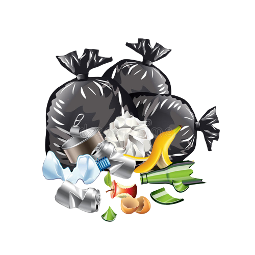
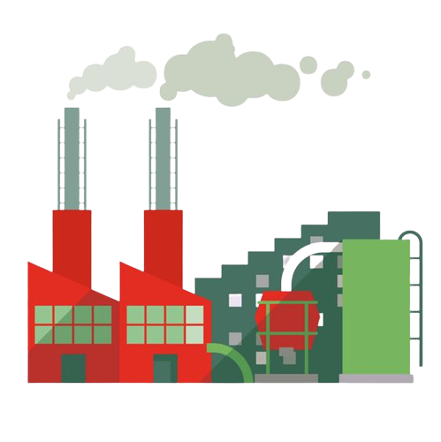
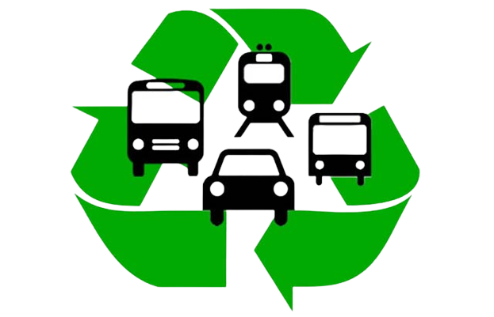

.png)


PGRS
PLANO DE GERENCIAMENTO DE RESÍDUOS SÓLIDOS
O PGRS se trata de um documento de força jurídica que ofereçe uma série de ações
possíveis de se fazer com resíduos sólidos de empresas
ou fábricas e essas ações abordam a coleta, transporte, trasnbordo, tratamento e a correta destinação dos
resíduos.
OS PRINCIPAIS OBJETIVOS DO PGRS SÃO:
- 1 Minimizar a geração de resíduos.
- 2 Proporcionar aos resíduos gerados um caminho seguro e correto.
- 3 Proteger trabalhadores, saúde geral , recursos naturais e o meio ambiente.
É melhor destacar que o PGRS é um relatório que fala sobre a forma individual de cada setor e inudade produtiva e caso uma empresa tenha várias filiais em outros lugares cada uma requer um PGRS e esse documento deve ser periodicamente atualizado como modificação ou inclusão de atividades a serem desenvolvidas no processo produtivo.
QUEM DEVE FAZER O PGRS?

Saneamento básico;

Comércios e serviços;

Construção civil;
Geradores de resíduos;
Produção e instalação industrial;
Serviços de saúde;

Mineração;
Meios de transporte;
TIPOS DE PGRS
1 - PGRSE - Resíduos Sólidos Especiais
2 - PGRSS - Resíduos de Serviço de Saúde
O gerenciamento dos Resíduos de Serviço de Saúde (RSS) é instituído pela RDC Nº 222, de 28 de março de 2018. Podem ser gerados por laboratórios de análises clínicas e de anatomia patológica, necrotérios, drogarias e farmácias, clínicas em geral, serviços de tatuagem, dentre outros. São exemplos de RSS: Culturas e os estoques de microrganismos; carcaças; peças anatômicas (órgãos e tecidos); bolsas transfusionais vazias ou com volume residual; produtos farmacêuticos; seringas; agulhas; embalagem de vacinas e medicamentos; vacinas vencidas; resíduos contendo produtos químicos; rejeito radioativo; resíduo perfurocortante em geral e resíduo comum.
3 - PGRCC - Resíduos de Construção CivilO gerenciamento dos Resíduos da Construção Civil (RCC) é disposto na Resolução Nº 307, de 5 de julho de 2002. Dentre os locais de geração estão construtoras e fábricas vinculadas a construção civil. São exemplos de RCC: Solos de terraplenagem; tijolos; telhas; placas de revestimento; argamassa; concreto; resíduos reutilizáveis ou recicláveis como agregados; resíduos no qual não foram desenvolvidas tecnologias ou aplicações viáveis para reciclagem/recuperação; solventes, óleos; materiais que contenham amianto.
Os resíduos sólidos urbanos (RSU) compreendem tanto os resíduos domiciliares (RDO), quanto os Resíduos Sólidos Públicos (RPU). Caracteriza-se como RDO embalagens; matéria orgânica derivada do preparo dos alimentos; rejeitos, tais como os oriundos de higiene, dentre outros. Já os RPUs são aqueles gerados nas ações de limpeza pública, como os oriundos de varrição, de capina, de poda, da desobstrução e limpeza de bueiros e bocas de lobo; da limpeza dos resíduos em locais públicos, como feiras; dentre outros.
-
O que deve conter em um PGRS?
Conforme previsto na Lei nº 12.305/ 2010, dentre os integrantes do conteúdo mínimo de um PGRS
estão:
- Descrição do empreendimento/atividade;
- Diagnóstico dos resíduos sólidos abrangendo a caracterização do material, a origem, o volume e os passivos ambientais vinculados;
- Definição dos responsáveis pelas etapas do gerenciamento e dos procedimentos vinculados a essas etapas;
- Identificação das soluções consorciadas ou compartilhadas com os demais geradores de resíduos;
- Listagem de ações a serem executadas mediante a ocorrência de acidentes ou ao gerenciamento inadequado;
- Proposição de metas relacionadas à minimização da geração segundo as normas estabelecidas pelos órgãos do Sisnama, do SNVS e do Suasa, à reutilização e reciclagem;
- Inclusão de ações vinculadas ao compartilhamento da responsabilidade pelo ciclo de vida dos produtos – quando for aplicável;
- Periodicidade para a revisão do estudo.